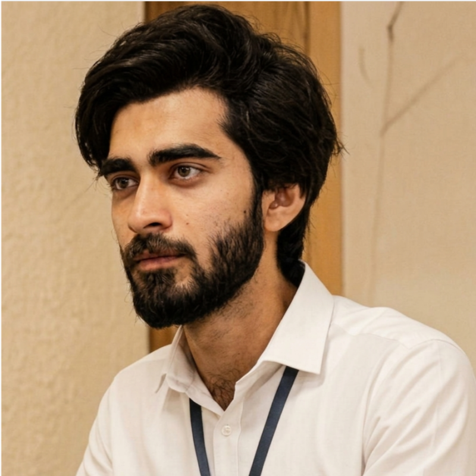

Oct 2022 — Jul 2026 · Education
Computer Science
University of Central Punjab, Lahore
Bachelor of Science in Computer Science. Building a foundation in software development and turning that learning into hands-on projects.
Full stack developer · Lahore, Pakistan
I'm Umar Qureshi. I build web applications and AI-powered automation that turn everyday problems into practical solutions.
A little about me
From responsive interfaces to intelligent automation, I enjoy connecting the pieces that make software useful. Currently building production applications as a Junior Software Engineer at BitBash.
Explore my work ↗01 / What I work with
Hover a skill. Explore the details.
Thoughtful interfaces. Reliable systems.
Less repetitive work.
02 / Selected work
Three products. Designed, developed and delivered end to end.
03 / Learning & building
Oct 2022 — Jul 2026 · Education
University of Central Punjab, Lahore
Bachelor of Science in Computer Science. Building a foundation in software development and turning that learning into hands-on projects.
Jul — Sep 2025 · Internship
Pakistan Railways · Software Engineer Intern
Developed a Flutter complaint management app for passengers, supporting admin tools for staff, and integration with the Rabta app. Collaborated with the IT team on deployment and optimization.
Jan 2026 — Present · Experience
Junior Software Engineer · Lahore
Building full-stack applications with React, Node.js, TypeScript and Python. Developing AI-powered workflows, web scraping and mobile automation, alongside production client projects.

Umar Qureshi / Lahore, PK04 / Beyond the code
I like work that makes a real difference to how people get things done: a clearer interface, a reliable integration, or an automated workflow that saves time.
My experience spans web applications, e-commerce, crypto monitoring and automation. I enjoy collaborating with teams to take features from an idea to a working product.
Download my résumé ↓Find me on
LinkedInConnect with me↗Emailuqureshi461@gmail.com↗Phone+92 325 4569359↗Based in Lahore, Pakistan